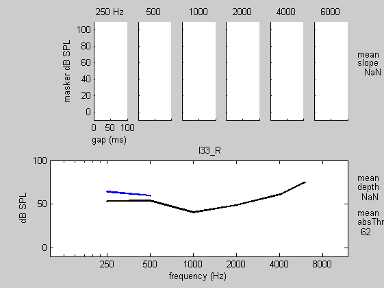
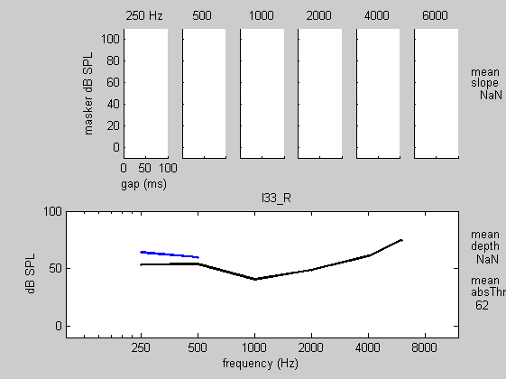
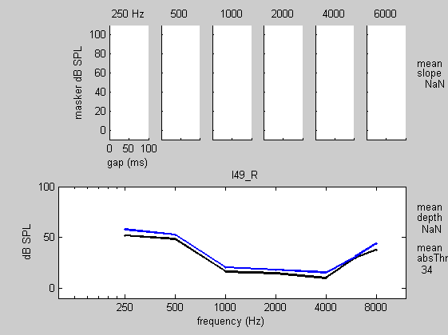
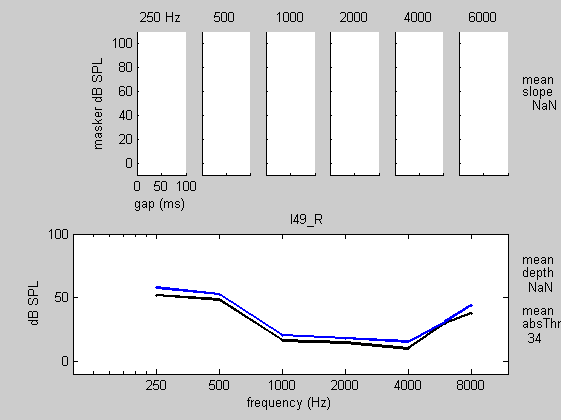

Contents


 
  
 


subfolder = normalHearing subfolder = impairedHearing
display results
ans = 43.5651 18.9194 2.7515 16.9738 19.9551 4.3736 40.9585 22.0215 7.1438 18.0730 20.9123 7.0068 37.9766 24.4251 11.2019 20.5117 23.1256 11.3012 40.4462 26.4575 13.7780 20.5941 22.2089 13.3422 47.2767 28.6993 10.3916 20.8548 26.9754 11.8549 50.3490 19.7725 12.5476 20.0793 18.2225 11.3419